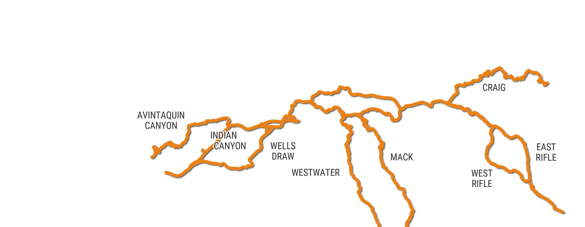
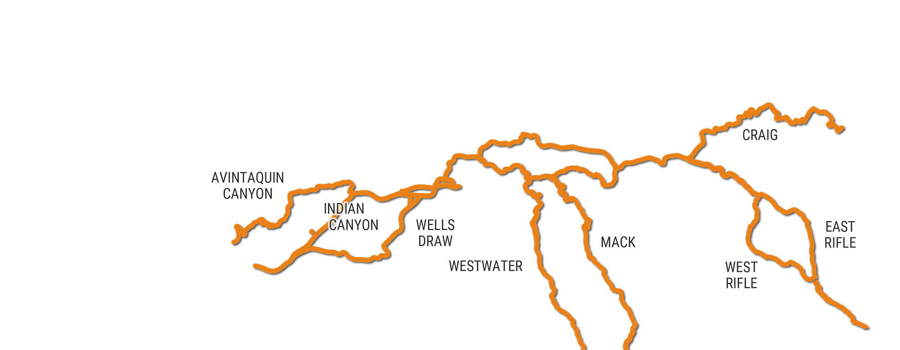

About
The Uinta Basin Railway provides new infrastructure that will solve the long-standing freight transportation challenges in the region by connecting to the national railway network.
This common-carrier railway will move goods in a safe and cost-effective way to enable economic stability, sustainable communities and enriched quality of life.

Explore this site to learn more about the project benefits, schedule, impacts, and funding, and check out the Uinta Basin Railway Toolkit.
PROJECT OVERVIEW VIDEO
Project Benefits:

ECONOMIC STABILITY
The Uinta Basin Railway will provide consistent, all-weather freight transportation, sustaining well-paying jobs and stable employment.
JOB CREATION
The Uinta Basin Railway is expected to add 100 new railway jobs in Carbon, Duchesne and Uintah counties and up to 300 additional indirect and induced jobs.
We also anticipate the railway will create additional short-haul trucking jobs to transport commodities to and from the railway.
SUSTAINABLE COMMUNITY
The jobs created through the Railway allow families to stay together in the Uinta Basin and contribute to the long standing values of our rural community for generations to come.

LOCAL FUNDING SOURCE
The Uinta Basin Railway is a commercially viable, self-sustaining railroad that creates income for the seven counties and their residents.

PRIVATE PAYS FOR IT
Mineral lease fees will pay for the railway study. We anticipate private industry will pay for the construction and operation of the railway through contracts and service fees for shipments.

ECONOMIC OPPORTUNITY
We anticipate the Uinta Basin Railway will increase opportunities and competitiveness for agriculture and livestock producers, landowners, contractors, miners and oil and gas producers.

REDUCED HIGHWAY USE
Trucking is currently the only way to transport goods in and out of the Uinta Basin. The Uinta Basin Railway will provide an alternative, safe and efficient system of freight transportation.
Final Selected Route
The U.S. Surface Transportation Board (STB) granted final approval for the construction and operation of the Whitmore Park alternative, subject to the STB’s Office of Environmental Analysis’ (OEA) final recommended environmental mitigation measures.
The environmental review process included extensive opportunity for public participation as well as input from agencies and other interested parties. Based on this analysis, the STB identified the Whitmore Park alternative as its Environmentally Preferable alternative for the railway. It will avoid and/or minimize major environmental impacts compared to the two other build alternatives.
Route Selection Process
The Coalition vetted a thorough list of potential routes for the railway. The Coalition sought to identify routes with the lowest cost to construct and operate, the fewest environmental impacts, and the fewest impacts on residences and communities, including minimizing impacts to agriculture, public lands, endangered species, and water resources. As a result of this evaluation, the Coalition proposed four alternative routes to the STB for additional study.
The STB, the lead federal agency that is responsible for preparing the environmental impact statement in compliance with the National Environmental Policy Act (NEPA), decided together with the cooperating agencies that three routes—the Whitmore Park alternative, the Indian Canyon alternative, and the Wells Draw alternative—meet the project’s purpose and need and are reasonable and feasible to construct and operate. These three routes, as well as the No-Action alternative, were evaluated in the Uinta Basin Railway EIS.
Explore all of the evaluated, short listed, and selected routes on the map below


 



 National Park Service Land
National Park Service Land
 Environmentally Sensitive Areas
Environmentally Sensitive Areas

Connect
Connect with us through social media!UintaBasinRailway.com
Thank you for visiting. This is the project website for the Uinta Basin Railway provided by the Seven County Infrastructure Coalition.
UintaBasinRailwayEIS.com
You can also visit the project website for the Uinta Basin Railway Environmental Impact Statement (EIS). Site and content developed and maintained by the Surface Transportation Board, the lead federal agency responsible for preparing the Uinta Basin Railway EIS. The Seven County Infrastructure Coalition has no role in determining the content of the EIS website.